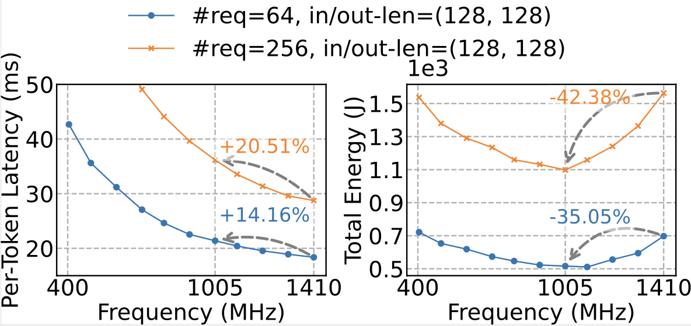

Relevance and Early Observation
LLMs are deployed at unprecedented scale, making inference a major driver of energy consumption and total cost of ownership (TOC). Recent studies show inference can account for 90% of AI infrastructure utilization, pushing datacenter power and thermal limits. Large datacenters today can consume electricity equivalent to millions of households.
At the same time, latency-sensitive applications like chat assistants and agent pipelines rely on strict Service Level Objectives (SLOs), such as Time-To-First-Token (TTFT) and Inter-Token Latency (ITL). Violating these SLOs degrades user experience and downstream responsiveness.
The central challenge: how can we serve LLMs under tight SLOs while reducing their energy footprint?

Our empirical profiling of LLM inference reveals a non-monotonic energy–frequency relationship . As shown above, while reducing GPU frequency from 1410 MHz to 1005 MHz (by ~28.7%) does increase execution time, the increase is sub-linear. Consequently, the total energy follows a U-shaped curve with respect to GPU frequency. This trend indicates that at low frequencies, execution time dominates energy , whereas at high frequencies, power dominates ; in the middle lies an energy sweet point .